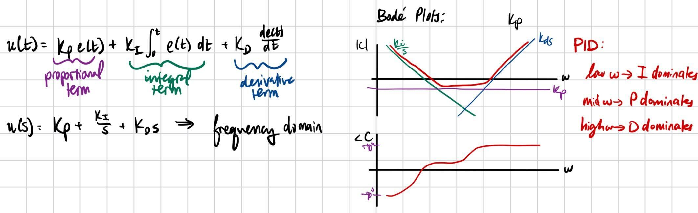
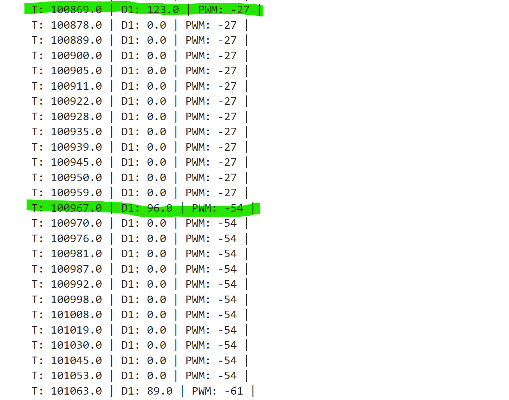

Lab 5 PID (Closed Loop Control)
The purpose of this lab was to implement closed loop control through PID controllers. The state we controlled was speed, and we used the TOF sensors to stop a set distance from the wall. PID stands for proportional, integral, derivative control. Each term takes the error between the current position vs the desired position and adjusts motor PWM accordingly.
Prelab
Bluetooth
It was important for this lab to establish a strong data collection, debugging, and bluetooth system. As such, I modified my code to operate via flags. I created a boolean, PID_ON, which was set to false by default. Then I created a switch case that could be used to activate the PID command over bluetooth; if I called this function on the python side, PID_ON would be set to true, allowing for data collection and the actual PID calculation to begin. Likewise, I had a STOP_PID switch case that would set that boolean to false. Then, in my main loop command, so long as the Artemis was connected via bluetooth, I would check for the state of these flags and act accordingly.
I also created a function that would allow me to change the gains over bluetooth while tuning my PID controller, rather than reuploading the .ino code all of the time. I did not do this for the first few runs, and once I added this code my life was truly changed.
Lastly, rather than send data live, I had a separate switch case that would loop over all arrays and send the data over bluetooth on command, rather than doing so live as we did in the past or immediately after the PID loop. Then, after running the loop and storing data points after certain intervals/measurements, I would bulk send over the data from a specific run and plot it, as will be seen below. I would then use this PWM and distance data to help debug. On the python side, the notification handler was pretty much the same.
P Control
I started off by just writing and tuning a proportional controller. The P controller operated on the principle of checking error between the goal distance from the wall and whatever current distance away the TOF sensor was reading. So, the further away from the target, the faster the robot would go to try and make up for the deficit. If it overshot, it would go backwards.
Tuning
Tuning the proportional control took quite a while. At first, I was using gain values of >1, which was far too high considering that my error was in terms of mm and often quite large. It made the robot gun it at a full 255 for basically the entire loop, and then overshoot and go in reverse at full speed again. My debugging script helped here, because it let me look at the PWM values over time helped me understand that my gain was too high.

After this, I tested gains below 1 and observed my performance. 0.02 was too low of a gain and the robot barely moved. On the tiles in upson, a gain of about 0.04 was the best for Proportional control I did most of my testing on carpet, though, where 0.08 was my best gain. In those trials, I capped my speed at 100 PWM because I had no cushiony material to protect my TOF sensor in the case of a crash. I did also test at higher speeds, though, to make sure the logic still applied.

PI Control
For PI control, my code did not change very much. I just needed to add a new term to my overall PWM calculation that integrated error over time.
Tuning
The goal of adding an integrator term was to eliminate steady state error that I observed from porportional control. That is, the robot would always settle at some position +/- 1 inch from 1 foot from the wall. Usually, it ended up undershooting. I ended up choosing a fairly small integrator value of 0.02 when my controller began to behave as desired. However, this made things pretty slow, so I actually thing I should reduce my integrator term to something 0.01 or lower (as in, an order of magnitude smaller than the P term) so that the integrator has less of an effect and speed is not sacrificed, but lower steady state error is still achieved. This is supposed by my plot, which shows small spikes in PWM as the robot settles. Small jumps in control like that are undesirable. Honestly, I think I could have just settled for a P controller, as the integral had less effect on accuracy I had hoped but definitely slowed down the loop a lot. The plots below are for the carpet tests, however for that case the wall buffer was set to 15 cm, not 25.4 which would be 1 foot. There was almost no steady state error, though! I also increased Kp by 0.01 to get 0.09.

Speed Discussion
TOF slope data indicates a max speed of roughly 2 m/s. I found this to be fairly consistent whether or not I capped my speed. With unlimited PWM (aka the full 0-255 range), things were slightly faster but still approximately 2 m/s.
5000 Level Task - Integrator Windup
One risk of adding an integrator is integrator windup. That is, if there is a same-sign error for a really long time, or even a large sudden change in error, the integrator can saturate and cause unwanted oscillating behavior and the P control will lose its effect. To combat this, I capped my integral term at +/-200 based on the possible values of PWM. With a gain of 0.02, PWM could change by a maximum of 2 PWM due to the integrator. Overall the P term dominated which is what I wanted.
Linear Extrapolation
The next task was to use linear extrapolation when TOF values were not available. To do this, as soon as at least 2 TOF values were collected, I would use those data points in between measurements to estimate the location of the robot. I did this each time the loop was calculated, and then if TOF data was actually available I would overwrite the estimated PWM value with a new PID calculation. In hindsight, this makes for inefficient code, because, it calculates PWM twice whenever a TOF value is available.
When I tested this on the floor, I noticed a consistent overshoot and that the car did not correct itself and go backwards. It just consistently settled too close to the wall. However, this was late into testing and I think my battery may have died. When I Serial printed, I noticed that the slope values were so large at high speeds that NaN would get returned, which to me indicates that something must be wrong with my code, but I am not sure what.
Speed Discussion
My current PID controller runs pretty slowly. Originally, I only calculated new values if a TOF sensor reading was ready, causing the loop to run every 98-100 ms which matches how fast the TOF runs which is at about 50 Hz. Adding an integrator further slowed down the code. When I changed my code to have old PID values used when a new TOF reading isn't available, as well as when linear extrapolation was used, the loop sped up by aboyt 20 ms. The photo below shows P control speeds in the very first iteration of the loop.
Discussion
This lab taught me about how to implement PI(D) control. In the case of linear control, only P control was needed for a sufficient controller, however I added an integrator to try and reduce/eliminate steady state error. Since this slows down the loop, though, I may not keep it long term. I did not add derivative control because I was experiencing derivative kick and would have needed to add a filter. Since my P and PI controllers were already good, I opted against this due to time. My linear extrapolation code did not work very well and could use improvements. Overall, I learned a lot as I have studied the math behind PID before but only implemented it once before this (using a very different method!)